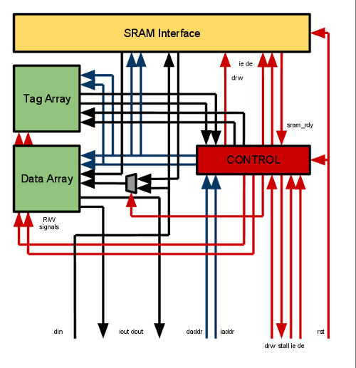

Below the SRAM is a simple cache. This is used because reads to the SRAM are already 4 times slower than the CPU, and the VGA module can hold the SRAM for upwards of 640 cycles at a time, all of which the CPU spends stalled.
The cache used right now is the simplest possible: Direct mapped, unified, write allocate, write through. We use direct mapped because it's the simplest to design, a unified cache because it eliminates coherency issues between caches, write allocate for performance, and write through for coherency with the SRAM. Write through also eliminates the need for eviction logic (we can always safely trash data being evicted). The only cache-able region will be the SRAM (0x10000000-0x10ffffff).